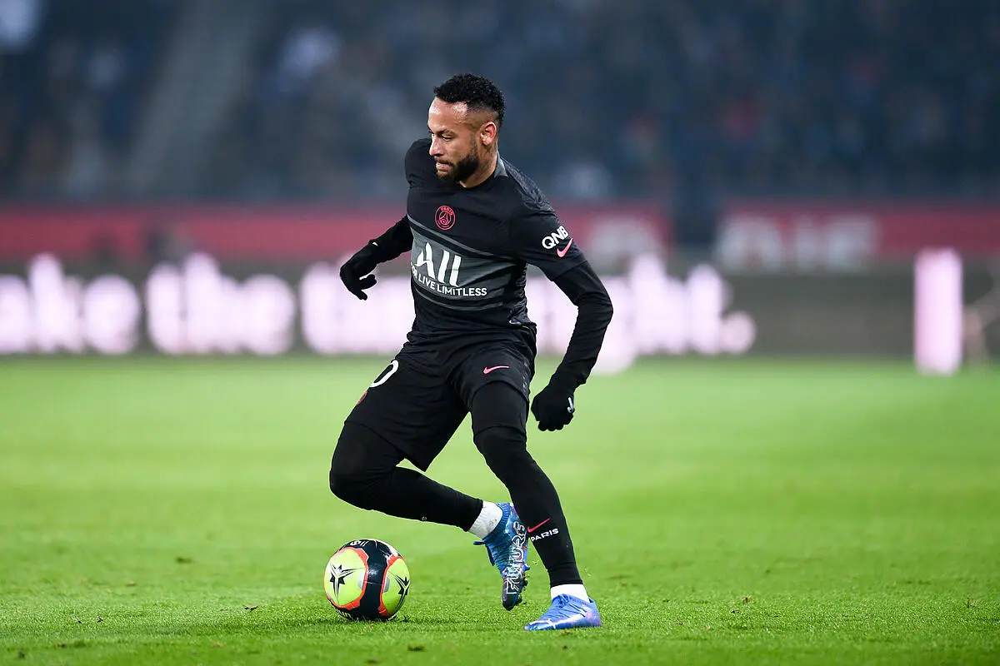
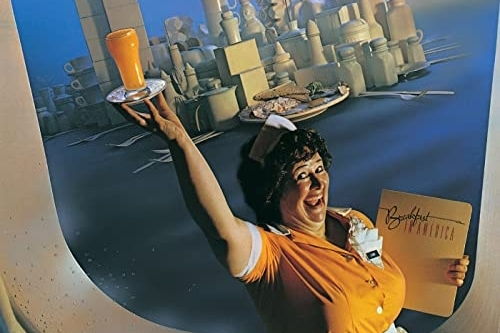
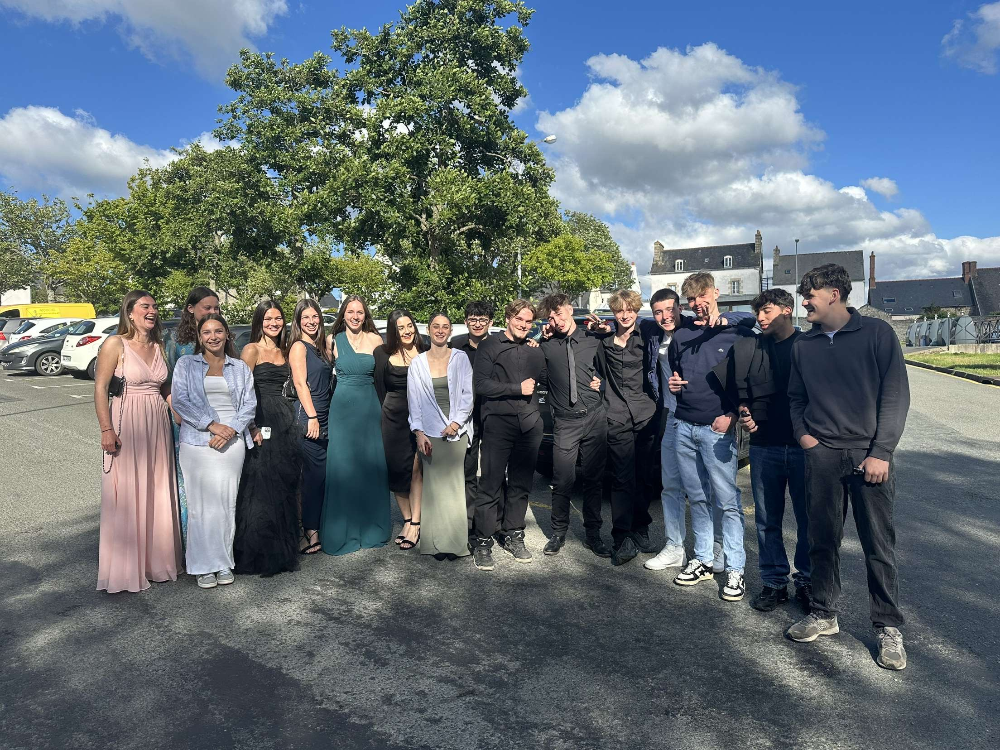

Jeux vidéo
Les jeux vidéo sont bien plus qu’un simple passe-temps pour moi, c’est une véritable passion qui me plonge dans des mondes immersifs comme la F1.
Étudiant BUT MMI | Designer | Créatif
Création de designs graphiques et mises en page simples avec Canva. Je conçois des visuels attractifs pour différents supports.
Retouche d'images et création graphique avec Adobe Photoshop. Je maîtrise les principales fonctionnalités pour produire des visuels professionnels.
Logiciel de montage vidéo et d'étalonnage professionnel, utilisé pour le montage, les effets visuels, la correction colorimétrique et la post-production audio.

Traitement de texte en ligne permettant de créer, modifier et partager des documents en temps réel, avec collaboration en cloud.
Outil de conception d'interface et de prototypage collaboratif en ligne, utilisé pour le design UI/UX et la création de maquettes interactives.
Logiciel de mind mapping permettant d'organiser des idées, structurer des projets et créer des cartes mentales pour la gestion de l'information.
Les jeux vidéo sont bien plus qu’un simple passe-temps pour moi, c’est une véritable passion qui me plonge dans des mondes immersifs comme la F1.

Je pratique régulièrement le foot et la musculation pour entretenir mon corps, et me libérer l'esprit.

La musique est important pour moi, car elle permet de décompresser et de se cultiver.

Mes proches ont une grande importance dans ma vie, ils nourissent ma joie de vivre et mon bonheur.


Descriptif du projet : Création d’un site web sur les Pokémons.
Contexte : Projet individuel avec encadrement pédagogique et autonomie.
Missions et étapes
Aspects techniques
Compétences développées : Autonomie, créativité, compétences en design et développement.

Descriptif du projet : Audit d'une entreprise avec des critères de communication, d'ergonomie et des attentes des utilisateurs.
Contexte : Projet réalisé en trinôme, en autonomie, avec un encadrement.
Missions et étapes
Aspects techniques
Compétences développées : Travail d'équipe, analyse stratégique, recherche documentaire.

Descriptif du projet : Conception de la communication visuelle du festival "À l’West Fest".
Contexte : Projet en trinôme, en autonomie, avec encadrement pédagogique.
Missions et étapes
Aspects techniques
Compétences développées : Créativité, design graphique, travail d'équipe.
Formation universitaire en Métiers du Multimédia et de l'Internet avec spécialisation en technologies front-end et expérience utilisateur.
Baccalauréat Sciences et Technologies du Management et de la Gestion avec option programmation web.
Formation intensive sur les principes de design d'interface et d'expérience utilisateur.